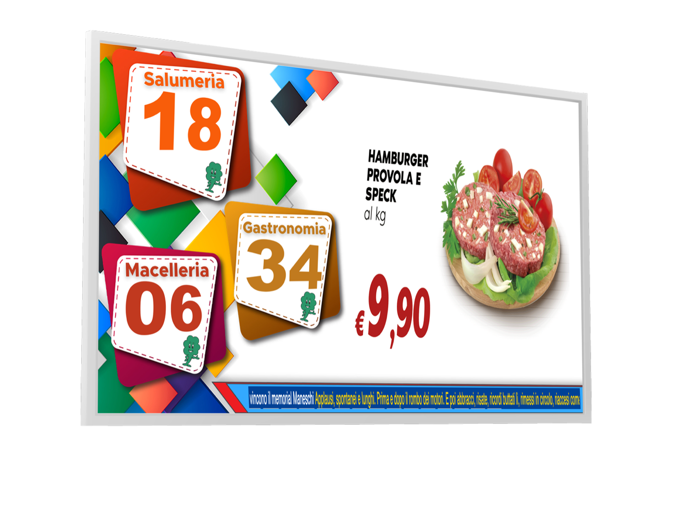

Monitor e contenuti
Il monitor è la parte che il cliente vede: deve dire subito quale numero è chiamato e quale reparto lo serve, senza smettere di intrattenere chi aspetta.

Layout
| Elemento | Impostazione |
|---|---|
| Tipo monitor | Di sala o di reparto |
| Numero chiamato | Font, dimensione, grassetto, colore |
| Reparto | Font, dimensione, grassetto, colore |
| Sfondo | Colore oppure immagine caricata |
| Numero a tutto schermo | Numero centrale di grande dimensione con sfondo dedicato |
| Box | News, meteo, immagini e video, ciascuno con posizione e dimensione |
Il numero deve essere leggibile da almeno cinque metri. Se aumenti i box multimediali, riduci il numero: meglio un monitor semplice e chiaro che una schermata piena di contenuti illeggibili.
Contenuti
News
Il box news carica un flusso di notizie da un URL configurabile e lo aggiorna all'intervallo scelto. I messaggi personalizzati del punto vendita possono essere inseriti nello stesso flusso senza modificare l'applicazione.
Meteo
Il box meteo mostra le condizioni locali da un servizio configurato. Come per le news, l'intervallo di aggiornamento si imposta nella scheda dei temporizzatori.
Immagini e video
- Le immagini vanno nella cartella configurata e vengono mostrate a rotazione.
- I video si riproducono nell'area dedicata, con durata impostata dal temporizzatore.
- Formati consigliati: JPG/PNG per le immagini, MP4 H.264 per i video.
- Evita file troppo pesanti: rallentano il cambio di contenuto sul mini PC.
Web radio e contatori
La web radio aggiunge audio di sottofondo o promozionale; i contatori mostrano valori letti da file locali, utili per iniziative e conteggi del punto vendita.
Controlli prima dell'apertura
- Numero e reparto
Chiama un turno di prova e verifica che numero, reparto e dimensione siano corretti.
- Contenuti
Controlla che news, meteo e immagini si aggiornino e che i video partano.
- Audio
Verifica il volume del PC e l'uscita audio del monitor o delle casse.
- Ripresa dopo riavvio
Riavvia il PC e controlla che il monitor torni da solo a schermo intero.